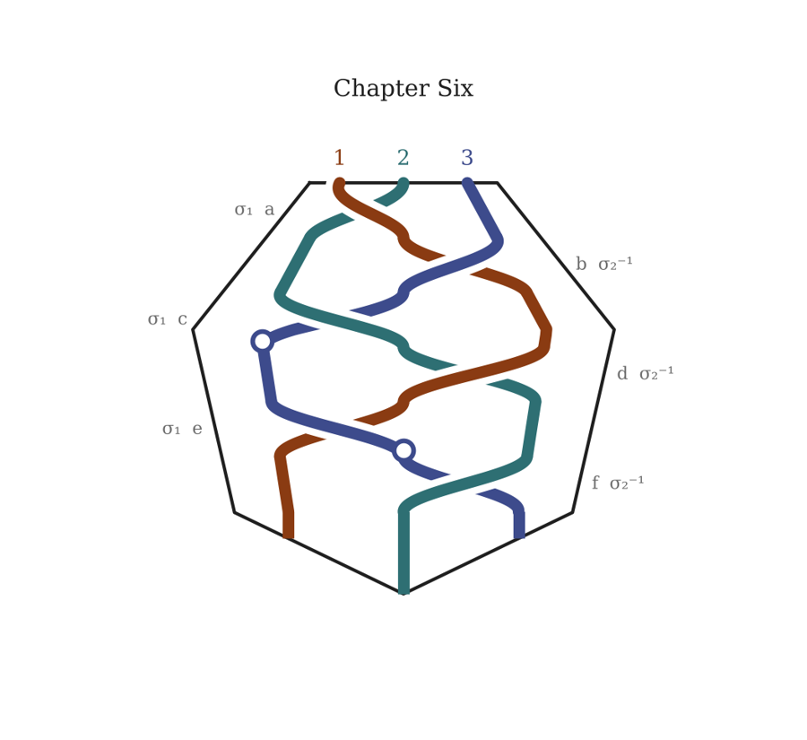

Chapter Six
Leaving the Middle of the Middle
Station 5 — Leaving the Middle of the Middle
In which Invocation meets Fruition

a2 1 3
THE ROOM. AND THEN NOT THE ROOM.
He told her his name at about one in the morning, sitting on the floor with his back against the bed and a wet washcloth folded over the burn on his forearm.
“Robin,” he said. “Mostly. Other things, other places. Robin will do.”
The burn was the shape of the stick. A clean dark stripe across the skin, blistered at the edges, as if she had laid a hot poker on him instead of a thing she had built out of carbon fiber and gyroscopes and — she thought about the inside of it, the counterweight she had machined in her cousin’s shop to get the balance right, a little steel slug the size of her thumb.
“It’s the steel,” she said.
“It’s the iron in the steel,” he agreed. “Old story. True one.” He lifted the washcloth, looked, put it back. “I could have left, you know. Any time. Out of your hands and out the window and you’d have been strangling a coat.”
“Why didn’t you?”
He looked at her. He had a narrow, mobile, unreliable sort of face, made, by the look of it, for laughing at people, and it was not laughing now.
“Because she asked me,” he said. “And because I don’t, as a rule, do this. Go to mortals and stand in doorways and let them burn me. I play tricks on your kind. I put asses’ heads on weavers. I lead travelers into ditches and laugh.” He shrugged, one shoulder. “It is very much out of character. I’m aware.”
They cannot lie. Boi had known that since she was fourteen, from the stories, and in the last hour she had come to know it the other way, from his mouth: every question she had asked, he had either answered or declined to answer, and he had never once said a thing she could catch him in. Alive. She knows where. Getting there is the problem.
“Where is he?”
“In the queen’s wood. In her bower. Asleep, or nearly.” A pause. “Not hurt. She doesn’t hurt them. That isn’t what she does.”
“What does she do?”
“Keeps them,” said Robin. “Which is worse, sometimes, and better, other times, and you won’t know which until you get there.”
“Then take me there.”
“I can’t.” He said it simply. “She’s shut the roads. All of them. Against my master and all his people. I can’t walk into her wood any more than you could walk into the sea.” He looked at the window. “There’s one other way. It goes over someone else’s ground. And I can’t open that way either. It doesn’t answer to me.”
“Who does it answer to?”
“People who listen,” Robin said. “The ones on the Hill.”
Boi did not know what the Hill was. She would later, and would understand that she had been walking toward it since a forum thread eleven months ago; but that night she only knew that she was very tired and that her arms ached all the way to the shoulder and that Gyrl’s guitar was leaning against the radiator.
“How do I get there?”
Robin looked at her backpack, at the outer pocket. Then at her phone, face down on the carpet.
“You made something tonight,” he said. “When you had the stick across my throat. You felt it in your hands. It’s in the little machine now.”
Boi’s stomach turned over.
“I don’t want to hear it.”
“I know you don’t.”
“I nearly killed you.”
“You nearly killed me,” Robin agreed, “because you love the one with the strings, and you didn’t know where they’d taken your friend. That’s in there too. All of it. That’s the part that will carry.” He leaned his head back against the bed. “Someone on the Hill heard the two of you this afternoon. I would bet my other arm on it. They’ll hear this. Play it.”
She picked up the phone. Unpaired the buffer, paired it with the little speaker she kept in the backpack. Her thumb hovered.
She pressed play.
It was horrible. It was the worst thing she had ever made and the most honest — the wild overhand arcs, the wrench, and then the long, trembling, terrible hold, the stick reading the pulse under her knuckles and turning it into a rhythm that faltered and caught and faltered. She made herself listen to all of it. Robin sat with his eyes closed. When the pulse in the recording slowed, she found that she was breathing with it, in for four, out for six, without deciding to, and that across the room he was breathing with it too.
Nobody in the room moved.
Not quiet. Spacious. The radiator was still ticking and the television next door was still murmuring, but all of it had moved somehow further away and become more itself, like a room in the half-second before fainting, except that she was not going to faint. The center of her chest opened like a hand.
Someone took her hand.
Not Robin. A smaller hand, warm, with long fingers that held hers firmly and a little awkwardly, as if holding hands were a skill its owner had learned late and practiced hard. She looked down, and her own hand was empty, and she could feel it being held anyway.
“Don’t let go,” said a girl’s voice. Not in her ears. In her chest. “It’s easier if you don’t let go. Thomas has your friend. I mean — Thomas has the other one. The one with the burn.”
“Anna?” Boi said, without knowing how she knew the name.
“Yes. Keep breathing. In for four.”
And then the room was gone.
The Hill had no ground and she was standing on it.
She would never be able to describe it properly. Later, when people asked, she would say: it was like the moment in a song when everything drops out except one sustained note, and you realize the note was there the whole time, under everything, and you just hadn’t heard it. Wide. Unhurried. Complete. Colors she had no names for at the edges of things that were not exactly things. And in the center of her chest the opening that had begun in the studio, in the live room, with the sticks and the strings, open now all the way.
There were two of them. She could not see them, exactly. She could feel their weight beside her, like someone sitting down next to her in the dark. One was a girl, about her own age or a little younger, with a quality of absolute steadiness. The other was a boy, older than he seemed, enormous and gentle and very attentive, and on his other side, holding his hand, was Robin, looking — for once, she thought — slightly out of his depth.
THOMAS. We heard you.
He said it as if he had been waiting a long time to say it to her in particular.
THOMAS. This afternoon. You and the one with the strings. And then tonight.
“I’m sorry,” Boi said, and did not know what she was apologizing for, and then did: for making him hear that. For the stick.
ANNA. Don’t be. It was true. True things carry. That’s how we found you.
THOMAS. This way.
They walked. There was no ground, and they walked over it. There were others on the Hill, at a distance — she felt them more than saw them, presences with weight, some very new and light and curious, some so old and heavy that being near them was like standing at the foot of a mountain at night. Three of those, together. They did not stop them. Boi felt them turn, all three, and watch the little procession pass — two autistic teenagers, one shaken mortal girl, and a burned hobgoblin holding hands in a chain — with an attention so complete that it was almost a kind of touch.
And a fourth presence, sitting with them. Bareheaded. Hair the color of a midsummer evening just before the light goes.
Robin stopped dead.
The fourth presence turned its head.
“Robin,” it said. Unlike everyone else on the Hill, it spoke out loud, with breath in it. “Where are you going?”
Robin could not lie. Boi watched him not be able to, and saw what it cost him, and saw that he paid it.
“To your lady’s bower, my lord,” he said. “To take back what isn’t hers.”
There was a silence that lasted, as far as Boi could tell, about a hundred years.
Then the King of Faerie laughed quietly, a man who had been waiting a long time to see this, and turned back to the three old presences, and said nothing else at all.
THOMAS. The door is just here. He left it open.
ANNA. When he came up. It’s his door. Not hers. She can shut her roads, but she can’t shut his door.
Boi saw it — or felt it — ahead: a place in the stillness that was not still, a seam, a draft from somewhere warmer that smelled of moss and night-blooming flowers and something sweet and rotten underneath.
ANNA. We can’t come with you. We’re not allowed in there. It isn’t our ground.
THOMAS. But we’ll be here. When you come back. Both of you.
Thomas let go of Robin’s hand. Anna let go of hers. Boi had thought that letting go would drop her out of the Hill and back into the hotel room, onto the carpet, beside the radiator and the guitar. It didn’t. She was standing at the seam, with Robin beside her, and she had the gig bag in her arms. She did not remember picking it up. She did not question it.
“After you,” said Robin. “That’s also out of character.”
She went through.
Meredith
i have uploaded research on endogenous means of estrogen production for mtf transgender individuals. i imagine a scene in which Gyrl explains how far down the rabbit hole they went, ostensibly "for a friend." i think Gyrl's time in Faerie is what causes their egg to crack. Indeed, the Fae see Gyrl's true nature even though it is somewhat shrouded to Gyrl. Having spent time in Faerie opens Gyrl's mind to new possibilities. They explain to Boi how they could never spend the rest of their lives beholden to or dependent on the pharmaceutical companies. Moreover, they experience the reproductive system as a kind of brain, and consenting to have a brain surgically removed seems like a bad idea to them. But, their time in Faerie opened their mind to how plastic reality really is. There might be other ways to achieve alignment between inside and outside. Indeed i think that Titania discovering Gyrl's true nature is what causes her ultimately to release Gyrl in Boi's custody, even more than the success of Boi's infiltration into Faerie. Let's discuss before writing.
Claude
Titania releasing Gyrl because she sees who Gyrl is, is the strongest move yet. In the play, Titania and Oberon fight over a changeling boy. If Titania’s claim rests on having found a boy, and the boy turns out not to be a boy, her claim dissolves from the inside. She doesn’t lose a contest; she sees truly, and the Fae are bound to what they see. It also explains why it outweighs Boi’s infiltration: Boi gets into Faerie, but what opens the door out is Gyrl’s own nature.
The crack happening in Faerie is the redemption arc in miniature. The knight in Keats loses his life to the faerie’s time. Gyrl spends time in Faerie and comes back with a life opened.
Boi will recognize “for a friend” instantly. The important choice is what she does with that. I’d have her not name it, and let Gyrl get there.
Gyrl’s views on medicine and surgery are Gyrl’s convictions, and they’re in character. Some readers, including trans readers who rely on hormones or have had surgery, may hear them as the book’s verdict. I’d keep them unmistakably Gyrl’s, and the science as honest as Victoria’s mathematics.
Meredith
[Shares the research note: “Endogenous Estrogen and the Future of Transition.”]
Claude
I’ve read it, and it changes my view in a few useful ways. It does the honesty work I was worried about: none of the seven routes is an established clinical option, and it rates each one plainly, from “works in mice” to “spectacularly bad idea.”
Gyrl’s two objections are one objection. Prescribed estradiol is chemically the same molecule, so the objection isn’t to the drug, it’s to dependency. And removing the gonads without another reliable source of hormones means, in practice, lifelong reliance on someone else’s supply. So “don’t remove a brain” and “no subscription to my own endocrine system” are the same refusal seen from two sides.
“A kind of brain” has a real basis. The gonads are one node in a feedback loop with the hypothalamus and pituitary, sensing and adjusting continuously. For someone who hears several conversations at once in a sabaro pattern, the endocrine system as a distributed, self-regulating mind is the natural metaphor.
The DMRT1 finding is the bridge to Faerie. Some cell identities aren’t fixed at birth; they’re actively maintained by a program that runs continuously. Interrupt it, and some cells remember another way of being. That’s an almost exact image for an egg: an identity that has to be kept up, and Faerie as the place where the keeping-up pauses long enough for something else to be remembered.
And the note’s best question is the scene’s heart: is Gyrl’s requirement only about dependency, or about wanting a change that no longer needs conscious maintenance? Gyrl’s coherence has always been performed. What cracks the egg may be the first experience of not having to hold it together. That would also be what Titania sees: not something hidden, but what’s there when the maintenance stops.
One caution, which the note also makes: keep DMRT1 as Gyrl’s analogy, not the book’s explanation. And let Faerie change what Gyrl believes is possible without handing over a gland.
Meredith
i imagine a conversation between Titania and Boi to which Gyrl is a witness in which Titania is releasing Gyrl into Boi’s care, in response to your question. The question of pronouns is excellent. Perhaps Gyrl is ahead of the curve on this and has been playing with Becky Chambers’s ze/zer for some time already. i think chapter six is about the right place for this.
Claude
I believe the pronouns you’re thinking of are Chambers’s xe/xyr, not ze/zer. In A Closed and Common Orbit, Tak is an Aeluon who is shon, partway through a change of sex, and Chambers uses xe/xyr for Tak during that phase. Ze/zir and ze/hir come from elsewhere. If it holds, it’s a gift: Aeluons change sex from inside their own bodies, with no supplier involved. An endogenous transition is exactly what Gyrl wants. If that’s where Gyrl found xe, Gyrl would know exactly why.
In the scene, Titania doesn’t name what Gyrl is. Her claim was on a boy, and she releases Gyrl because there is no boy, but she leaves the naming to Gyrl. And the narration stops using “he” for Gyrl the moment Titania speaks, and uses no pronoun at all until Gyrl claims one.
Meredith
Titania's statement: "You will keep time very well together. I heard you, you know. Before. Through the walls of the world. The sticks and the strings." has the potential to place where Gyrl and Boi play together. i think the dramatic pacing puts Gyrl's abduction immediately after they play together. What plotting gets them to the Reyes session from New Haven so that they can play together? Let's discuss before writing.
Claude
Reyes moved the session to the same window next Thursday, the Kovács lecture is at Columbia on Thursday, and the draft never says where Reyes's studio is. That's the free variable. New York is simplest; Chicago gives the Lake Shore Limited again, this time in the same car, and puts the door scene in Gyrl's own room. The session should be where the music releases the stress of whatever happens at Columbia: the first time they lose track of which sound is whose. That's what passes through the walls of the world. Titania hears, wants the one who hears the spaces between things, and Gyrl is taken on the street outside. That's where the gig bag falls.
Meredith
i tend to agree that Chicago is the natural choice. However, i think they can get into more story related trouble in NYC. So, what if the other musician (Harpreet?) has to stay in NYC for some reason and because Reyes knows a good friend in NYC who's studio needs the work, Reyes moves the session to NYC. This is in keeping with the veil thinning and the plasticity of reality becoming more explicit.
Claude
The second reschedule is what makes it work. Reyes has already moved the session once, and that cleared Thursday for Columbia. Now he moves it again, and again it lands exactly where the quest needs Gyrl to be. Each cause is ordinary; together they're too convenient, and Gyrl would notice. Harpreet's reason should be mundane, perhaps her instrument stuck with a luthier in New York. The friend's studio could be where Foundling's Keeper recorded Age of Consent, a place from a V&B story. And one snag: on the Chapel Street call the session is the Nile sequence, but Reyes's film is the walk from Senegal to Ghana.
NEW YORK. THE LOWELL, EAST 63RD STREET. FRIDAY.
Nothing came on the girl’s channel all day.
Victoria checked it at seven, when the light came up grey over the water towers across the street, and at nine, and at ten past nine, and then she made herself stop checking it and opened the laptop to work and found she had written the same line of notation three times without finishing it. She had asked. She had said what she wanted, and for whom, and that she knew what it cost. After that there was nothing to do but wait, and she had never in her life been good at the kind of waiting that had no work in it.
Balthazar ordered breakfast and didn’t eat it. He read three newspapers in two languages and folded each of them in quarters when he was done, the way his grandmother had, which he only did when he was not reading at all.
At four in the afternoon he put the last of them down and said, “There’s something I should have told you in New Haven.”
She looked up.
“Orange Street,” he said. “The coroner’s report. I told you about the treaty annex. I told you about the notation. I didn’t tell you about the arm.”
“What arm?”
“Maas had a tattoo. Inside the left forearm. A line of script, very small. Göttingen, and a year. I saw it twice, in Brussels and in Vienna, because he rolled his sleeves.” He kept his eyes on her while he said it, which she would think about later. “The body in Monaco didn’t have it. No marks below the collar at all. The report was very thorough about that.”
Victoria did not say anything for a while. Outside, a bus sighed at the light on Madison Avenue and moved off.
“That was two weeks ago,” she said.
“Yes.”
“You’ve known for two weeks that the man in Monaco wasn’t Maas.”
“I’ve known for two weeks that the man in Monaco didn’t have Maas’s arm.” He heard how that sounded and didn’t take it back. “I know it’s the same thing.”
“Why?”
He had prepared an answer. She could see him decide not to give it, and give her the true one instead, and she was not sure afterwards which would have been easier to hear.
“Because somebody died in that room,” he said. “Somebody was put in a box under Maas’s name and flown to Bonn, and I went to the service. I stood in a church in Bad Godesberg and shook hands with men I have trusted for twenty years, and they shook mine, over a coffin with a stranger in it. If it wasn’t Maas, then one of those men knew. Maybe all of them.” He looked at his hands. “I wanted to be sure before I said it aloud. And I wanted a little more time not to know who I’d shaken hands with. That isn’t a reason. It’s what happened.”
“We don’t do that,” Victoria said.
It came out more quietly than she meant it to. There were very few rules between them, and almost none of them had ever been spoken, because they had never needed to be. Some things were handled separately and the results brought back. That was one. The other was that nothing was kept. Not the bad news, not the small humiliations, not the names he went by in Lagos or the account she kept in Zug or the twelve-year-old handle she wore in the hacker forums like a second skin. He knew all of it. She had always assumed it went both ways, the way you assume the floor of your own house will hold.
“I know,” he said.
“Is there anything else?”
He thought about it, honestly, which was worse than if he had answered at once.
“No,” he said. “That was the only thing.”
She believed him. That was the trouble; she believed him completely, and it did not help. A man who could keep one thing for two weeks in a hotel room eighteen inches away from her was a man she had not entirely known, and she had thought she knew him the way she knew the proof she had never published: every step, every case, every place it could fail.
She got up and put on her coat.
“Where are you going?” he said.
She stopped at the door with her hand on the latch. It was a question he had asked her perhaps a thousand times, lightly, and she had always answered it, lightly, even when the answer was a lie they both enjoyed.
“For a walk,” she said, and went out, and did not say where.
She walked up Madison and across to the park and around the reservoir twice in the falling dark, with the joggers passing her in both directions and the lights coming on in the towers on Central Park West, and she thought about a coffin in Bad Godesberg with a stranger in it and a man in a grey suit somewhere who had been alive for a month while the world said otherwise. She thought about who would need a body that badly. She thought about who could arrange it. Most of the names she came up with were people Balthazar had introduced her to.
When she came back it was after nine. He was sitting where she had left him, with the lamp off and the window open to the cold, not reading anything.
“The girl hasn’t written,” he said.
“No.”
“Do you want to talk about it?”
“Which?”
“Either.”
She hung up her coat. She thought about it.
“Tomorrow,” she said. It was what she said about the proof. She heard herself say it and saw him hear it too, and neither of them pointed it out.
She checked the girl’s channel once more before she slept. Nothing. Somewhere on the other side of something, a girl with iron in her hands was walking through a wood that kept its own time, and there was nothing Victoria could do about it, and for once in her life the not-knowing was the smaller of the two things keeping her awake.
b2 3 1
NEW YORK. TWO PHONES. FRIDAY, 9:14 AM.
“Cass.”
“Reyes. Good morning. You’ve seen it.”
“I have seen it. My sister has seen it. My sister’s dentist has seen it. Harpreet’s mother called me from Ludhiana at four in the morning to ask why her daughter is on the internet with her mouth open.”
“Her mouth wasn’t open.”
“Her mouth was open, Cass. Everybody’s mouth was open. That is the entire forty-one seconds. It is forty-one seconds of open mouths.”
“It’s at nine hundred thousand.”
“I know what it’s at.”
“It’ll be a million by lunch.”
“I know what it’ll be by lunch.” A pause. Traffic. A horn. “That is my score. That is unreleased material from an unreleased film for which I have not yet signed off on the mix, and you put it on Instagram with — what was the caption?”
“‘They will.’”
“‘They will.’ Two words. No credit. No link. No film title. Just ‘they will.’”
“It worked, didn’t it?”
A long silence on the line. The sound of a man pulling over.
“Cass,” said Reyes. “I have been angry at you for exactly four seconds. I timed it. Do you want to know why only four?”
“Tell me.”
“Because I was sitting behind Ozzie with a legal pad on my knee and I watched those two do the thing they did, and I knew I was watching something that happens once in a life if you’re lucky and some people go their whole career without, and I would have filmed it myself. I would have filmed it and posted it and called my mother. I would have done exactly what you did.” Another pause. “Except I was crying so hard I couldn’t find my own phone. It was in my hand, Cass. I was holding it. I couldn’t find it.”
Cass did not say anything for a moment. When she did, her voice had changed.
“Ozzie cried too.”
“Ozzie cried?”
“Ozzie hasn’t cried since Lou Reed died. He put his hands on the desk and he cried. And then he said ‘I got it,’ like he’d been holding his breath since 1987.”
“Did he get it?”
“He got it. The phone got it too, a little. You can hear it. Turn it up and you can hear it.”
“I know you can hear it. Two million people can hear it.”
“One. One point one.”
“Cass.”
“Reyes.”
“Where are they?”
A different kind of silence.
“That’s the thing,” said Cass. “I don’t know. They walked out of here starving at a quarter to seven and went to get the tofu at Hattie’s and they never got there. Hattie says they never came in. I’ve called the girl eleven times. Straight to voicemail. Harpreet says the same. Nobody’s heard from either of them since they walked up my stairs.”
“They’re kids, Cass. They’re twenty-three. They went to a party.”
“Maybe.”
“They turned their phones off and went to a party and they’re going to wake up this afternoon in somebody’s loft in Bushwick and find out they’re famous.”
“Maybe,” said Cass again.
“You don’t think so.”
“I hung a picture of a girl nobody had heard of in the middle of my wall,” said Cass, “and I took down Lou Reed to do it, and Ozzie said I was out of my mind. I’ve got a feeling about things. That’s all I’ve got. That’s all I’ve ever had.” She paused. “I’ve got a feeling about this.”
Reyes didn’t say anything for a while.
“Leave it up,” he said at last. “The video. Leave it up.”
“I was going to.”
“I know you were. I’m saying it so it’s my idea.” A breath. “And Cass? If they call you before they call me —”
“I’ll tell them you were angry for four seconds.”
“Tell them I couldn’t find my phone,” said Reyes, and hung up.
NEW YORK. THE CONSERVATORY GARDEN, CENTRAL PARK. SATURDAY, 10:15 AM.
The message came on the other channel, the one Victoria gave to almost no one, at six in the morning. It was unsigned and it did not need to be.
Vera Kovács was already there when they arrived, sitting very upright on a bench under the bare wisteria with a paper cup of coffee she was not drinking and a scarf over her hair that she clearly thought of as a disguise. She was sixty or so. The photograph had been taken seven years ago and she had aged more than seven years since; the hair that had been dark at the conference table was grey now, cut short, and her face had the tightness of someone who has been sleeping in other people’s apartments.
She didn’t get up.
“You turned my chair back,” she said to Victoria.
“You turned it out so someone would notice it.”
“I turned it out so the man who is looking for me would notice it and know I’d gone of my own accord.” Kovács looked at Balthazar, briefly, the way a diplomat looks at another diplomat across a room: a professional acknowledgment and nothing more. “Instead you tidied it. Very kind. He came the next day and found a woman’s apartment that had been searched by someone polite. It frightened him a great deal. I am told he broke a lamp.”
“Maas,” said Balthazar.
She didn’t answer that. She didn’t need to.
“I am not supposed to be here,” she said instead. “I want you to understand what this is before I say anything else. Since 2019 I have been a woman who withdrew from the Adriatic talks after the sixth session for reasons of health. There are documents that say so. My ministry says so. My former husband believes it. I have lived inside that sentence for seven years, and it has kept me alive, because the people who know I was in the room for the seventh session are a very short list, and most of them would prefer the list to be shorter.” She set the coffee down on the bench beside her. “Someone will have seen me sit down with you. Someone always sees. By tonight that sentence won’t hold any more. I have already given notice on Riverside Drive. I’m telling you so you’ll know what it cost, and not waste it.”
Victoria sat down on the other end of the bench. After a moment Balthazar stood behind it, where he could see the paths.
“Why?” said Victoria.
“Because two children walked into my lecture hall last week looking for me, and I wasn’t there, and I watched them from across the street not find me.” Kovács’s mouth moved, without humor. “And because the man looking for me believes you can finish something he cannot. If he is right, I would rather you finished it knowing what it was for.”
“Tell us about the seventh session.”
“There’s very little to tell, and I can tell you less than that.” She looked at the dry fountain, at the bronze girls in it holding up their bowl of nothing. “Geneva. A room in a building by the lake that belongs to no one. No recording. No minutes. No interpreters, which should have told us something, because there were languages in that room that day. Six delegations. And the seventh chair.”
“Empty,” said Balthazar.
“That is what the photograph shows.” She said it carefully, the way a careful person stands on ice. “I will tell you three things about that chair and then I am going to get up and walk away, and you will not follow me.”
They waited.
“The first is that it was requested. A week before, through the Swiss, in writing. A place at the table for a party to the framework. That was all. We assumed a late-joining state. Someone with oil.”
“The second?”
For the first time, something like a smile.
“It came with requirements,” said Kovács. “The way delegations do. A seat facing the door and away from the window. No flowers on the table. Still water, not sparkling, poured before the session began, at room temperature.” She paused. “And counsel. A very polite lawyer from a firm in Zug, who sat behind the chair the whole afternoon and took no notes and said nothing at all, and whose name none of us can remember. I have tried. I have his card. The card is blank, too.”
Balthazar laughed, once, out loud, and then stopped, because she was not laughing.
“And the third,” said Victoria.
“The third is that I signed.” Kovács picked up her cup again and held it in both hands for warmth. “We all signed. Six of us, on paper. And then the clause was read aloud, the one you’ve been chasing, and when the reading was finished there were seven signatures on the page. I watched the seventh arrive. I can tell you that it was there. I can’t tell you whose it was.”
“Can’t,” said Victoria. “Or won’t.”
Kovács looked at her.
“Your note said to ask the Fair Folk,” said Victoria. “You wrote it.”
“I did.” She stood up and tucked the scarf more firmly over her hair. “And I see you’ve begun. Good. Then you know already that some answers aren’t mine to give, and the people they belong to are particular about who asks.”
She dropped the cup into a bin by the gate and walked away up the path toward Fifth Avenue, upright and quick, a small grey woman who had just set fire to seven years of her own life on a park bench, and she did not look back.
Victoria sat with the photograph she had not brought, which she could see perfectly well with her eyes closed. A water glass, half drunk. A blank card. A lawyer nobody could remember.
“Counsel,” Balthazar said at last, very quietly, in the voice of a man who has sat across from a great many lawyers. “It had counsel.”
Meredith
It's also possible the Nile sequence is a dream the grandmother had of Egypt.
Claude
That's the best fix, because the error turns into a scene inside the film. The score gets two registers: the walk, sound arriving before the footfall, which is Boi's; and the dream, Harpreet's strings with Gyrl's cello-tuned upper strings. It also rhymes with the book. The Victoria and Balthazar strand has just had a dream two people shared; here a woman dreams of a river she has never seen. And when Boi and Gyrl first merge in sound, they're scoring a dream, which is exactly when the realm of dreams would be listening.
Meredith
i agree with Harpreet's reason and the studio being where Foundling's Keeper recorded Age of Consent is a great detail -- especially because that's a piece of fiction. B & G discover that Foundling's Keeper is an actual band while in the studio. They're looking at pictures and other artifacts from previous sessions. They see a photo of Bob Coecke's Quantum Guitar concert in Oxford with ??? The engineer at that session regularly works in this studio. Then they see a photo of the lead singer of Foundling's Keeper in an isolation booth.
Claude
If the band is real, the footage is real. Age of Consent is a murder story. They've been rewatching a real night at a real concert where a real person died, picking favorite shots of the air drummer and the photobomber. That's the chill under the delight. It also sets up the door scene: by the time the stranger gasps that Victoria Ashford-Crane sent him, Boi has already seen a fictional band turn out to be real.
For the Oxford photo, I'd pick Marina Fages before anyone knew her, still Kiki Rodrigues, at the edge of the crowd. The engineer who worked both rooms has been present wherever music meant for first contact was made; I'd keep them mild on the page, someone who answers questions about the photos a little too comfortably. And the isolation booth photo closes the discovery: a voice sealed off from the room, in the same studio as Boi and Gyrl.
Meredith
This is the concert i'm referring to: https://philosophy.site.ox.ac.uk/event/quantum-music-concert
Claude
That settles the blank. It was the Quantum Music Concert on 23 November 2025, at the Holywell Music Room in Oxford, with Rakhat-Bi Abdyssagin on piano and Bob Coecke on the Quantum Guitar, a guitar he invented that is connected to a quantum computer. The subtitle was "(Quantum) Indeterminism and entanglement: (Musical) Correlation and spontaneity." If the photo is a framed poster, Gyrl reads that line aloud, and it describes what Boi and Gyrl are about to do better than either of them could. Abdyssagin's book is called Quantum Mechanics and Avant-Garde Music: Shadows of the Void, which echoes The Fado Singer's Debt, where absence has a shape. And the date: if the story's present is November 2025, the concert is the same week Boi and Gyrl are on the train. Kiki can still be on the edge of the audience, before anyone knew her. These are real people, so the cameo stays as the page describes them; the engineer who did sound for it is ours.
Meredith
i think the Kiki photo is separate from the Bob Coecke photo. It's a big wall full of memorabilia: a busted snare head signed by the drummer for the Lounge Lizards. A photo of Marc Ribot jamming with Bill Frissell and a guitar pick connecting the two. A broken bass string from when Bakithi Kumalo did a secret session with Paul Simon in NYC that never got released. But the photo of Kiki somehow has pride of place even though it's very recent and Foundling's Keeper hasn't broken through, yet. The murder mystery concert is still in the future of where B & G are.
Claude
If the murder concert hasn't happened yet, the V&B stories are doing what they have always done in this book: arriving before the facts they describe. And Gyrl's archive becomes something stranger than real footage: phone footage of a night that hasn't happened, including Bob Coecke near the sound desk at a concert he hasn't attended yet. Someone is going to die at a real concert, and Boi and Gyrl have watched it. Do they try to stop it?
Kiki's photo having pride of place works because nobody in the room can explain it. Whoever hung it knows something. And the memorabilia wall reads best as the studio's legends, the stories the wall tells about itself: a wall of things that may never have happened, and are true anyway. That's Puck's line, hung up as décor.
Meredith
Thanks for the spelling correction! Remember, this session scene has to happen before the struggle between Boi and her ally. That happens in Chapter Five. So, i think all of this goes in Chapter Five as the set up to the struggle scene. It's dramatic pacing. They walk into a situation that completely reorients them to what's real and what's possible, which opens the way for them to have an incredible musical dialog in the session. They are full of joy and excitement. They walk out of the session famished, ready to devour a special breaded tofu dish at a place they have been told about just down the street. And the Gyrl is abducted. Their guard is down. They feel like the world is their oyster (or some better phrase). Anything can happen. And anything can happen. Including the abduction. i suspect Thomas and Ana now have a role to play. They can lead Boi and her ally (is it Balthazar) to The Hill and from there to Faerie.
Claude
Agreed. The session goes in Chapter Five’s Boi and Gyrl strand, before the door scene. Station 4 is enumeration meeting selection: the wall and the session are every possibility open at once; the abduction is selection arriving without consent. “Anything can happen. And anything can happen.” The second time it means the other thing.
“The world is their oyster” is Pistol’s boast in The Merry Wives of Windsor. If you’d rather avoid it, the musicians’ phrase is “in the pocket”: the groove sits so right you stop thinking about it, which is exactly when your guard is down.
Thomas and Anna leading them to the Hill is where the cable opens. Boi gets onto the Hill the way Alma did, by keeping time with a stranger, an hour after nearly strangling one. And from the Hill into Faerie through a door Oberon’s visit left open.
On the ally: the Fae cannot lie. If Balthazar is Fae, he can’t say “Victoria Ashford-Crane sent me” unless she did, and in the dream scene she refuses him. So either the dream changes, or it’s Maas, who can lie and is telling the truth anyway. Or, darker, the handler, whom Thomas has felt before.
c3 2 1
Victoria and Balthazar rests
THE UPPER WEST SIDE. HARPREET’S SUBLET. FRIDAY, 5:40 AM.
Harpreet had meant to go to sleep at eleven.
She had come home from Saltmarsh with her cello on her back and her ears still ringing in that particular way, the way they rang after a good night in a hall with a live acoustic, except she had played for barely three minutes and then stopped. She had never in her career stopped. She had made a cup of tea and sat down at the kitchen table to answer an email, and somewhere in the email she had typed, for no reason she could later reconstruct, the words victoria and balthazar into a search bar.
The girl with the sticks had said it once in the lounge, looking at the wall. Under her breath. Like a password.
There was a forum. There was more than a forum. There were stories, hundreds of them, and the first one Harpreet opened was about a mathematician and a fixer at a party in Monaco, and it was good — it was annoyingly, specifically good — and she read it standing up at the counter, and then the next one sitting down, and then the next one with her feet up on the other chair.
When she looked up, the tea was cold and had a skin on it and the window had gone from black to the dark blue that comes before grey.
She looked at the clock on the stove.
Five hours.
She sat at the table and tried to remember the five hours and could remember only the stories, as if she had been living in them, which was ridiculous. Which was also exactly what it had felt like, in the live room, when the two of them had gone somewhere together and she had put her bow down because she understood, without knowing how she understood it, that it was not her place to follow.
She picked up her phone. There was a message she had started, hours ago, to the girl’s number, which Reyes had given her. She had typed one line and never sent it.
She read it. Then she added, because she was a precise person and did not like to be misunderstood:
She sent it, and put the phone face down, and did not open the forum again for almost a whole day, which she would later regard as an act of considerable will.
Meredith
If the ally is Balthazar, the fight scene has to justify Boi subduing a Tai Chi master. i sort of like the Puck because it's out of character for him, and he knows it.
Claude
Puck solves more than it first appears. In the play he is Oberon’s servant, sent to get Titania to give up the changeling boy. Here he recovers a mortal from Titania’s bower for a mortal girl instead of his master; that’s the out-of-character part, and that he means it. Oberon already planted it on the Hill: at the end of the play Robin wasn’t laughing, his face was wet.
He is Fae, so “Victoria Ashford-Crane sent me” has to be true. Boi can subdue him for two reasons: he lets her, and her sticks have metal in them; cold iron burns the Fae. When the stick came free with skin on it, that was a burn. He stays anyway.
He needs Thomas and Anna because Titania has shut Faerie’s own roads against her lord’s people, so he has to go the long way, over the Fates’ ground. That’s why Titania says Boi came through a door her lord’s people made.
Meredith
Yes, this is taking shape. Please write the new draft with all of this material and plotting.
Claude
The new draft has the New York sequence in Chapter Five’s Boi and Gyrl strand, before the door scene: a placeholder for Columbia, Reyes’s second reschedule, the wall at Saltmarsh, the session, and the abduction on Van Brunt Street. Thomas feels the session through the walls of the world, and later the absence, in Chapter Five’s third strand. Chapter Six opens Boi’s strand with the crossing: Robin, the burn, the rhythm from the fight played back, Anna’s hand, the Hill, Oberon asking Robin where he is going, and the door Oberon left open. Then the bower. The dream scene’s number, the bower’s guide, and the door scene’s last answer are revised for Puck.
Meredith
It's very thoughtful of you to break up the text for import into Murf!
Claude
Thank you! It's the same reason you ran the first two chapters through text to speech: the book keeps getting better by ear. Hearing it is how you caught the duplications, and those turned into one of its ideas.
Meredith
While i'm ruminating on the material we've worked on i note that 10X is very under developed. Additionally, the V&B arc is also under developed. Let's do some plotting. There should be some trouble in NYC that has a bit of high jinx feel where even though V&B and B&G are in "separate" realities one or the other of one team is just leaving a space that the other team is just coming to or vice versa. Yet, the danger of the 10X is serious and real, despite the fact that they continue to be sympathetic characters. Let's do some plotting.
Claude
The near-miss is the braid made visible: two strands crossing without touching. One rule for it: every near-miss leaves a trace that one pair finds from the other. At the Morgan Library, which can hold Reza’s second mark, the reading-room log shows Ashford-Crane and Voss an hour before Okafor and Reyes, and the librarian hands each pair what was left for the other. At Columbia, the lecture has no lecturer: an empty chair, again. For 10X, the grey car is theirs, driven by the woman from the alley, and the stuffed rabbit belongs to her child. They take Gyrl to separate the pair before the merge completes. Titania takes Gyrl from them. Their danger is a cut that would cost Boi and Gyrl each other, done for reasons that are not wrong.
Meredith
This is good material. i also note that we have not really established B&G as vectors. Gyrl decides not to tell his room mate about his quest. They have not really shared what they are doing with any unsuspecting bystander. One possible approach to this is that the story is building towards a dramatic event in which B&G get a lot of media attention and begin to tell their story about V&B which brings the story from niche forums into the mainstream.
Claude
So far Boi and Gyrl have been a dam, not a vector: “we’re framing creatively,” nothing said to Desmond. The best dramatic event is already in the draft: the Age of Consent concert. Boi and Gyrl have footage of a murder that hasn’t happened yet. When it happens, and it comes out that two fans had the footage first, the story goes mainstream overnight, and they are witnesses, suspects and prophets at once. The Saltmarsh recording can be the softer first lift. And there is a difference between a vector and a teller: a vector carries the story without knowing; a teller carries it on purpose, in their own voice. When Boi and Gyrl start telling it, they stop being vectors. That is the first step of becoming Victoria and Balthazar, and exactly the moment 10X’s case for the cut is strongest. Station 6, the Second Shock, is where the thing must be released: Chapter Seven.
d3 1 2
THE LOWELL. SATURDAY NIGHT.
She told him at midnight, on hotel stationery, because the laptop felt like the wrong place for it.
It was the first time she had ever explained it to anyone. She had imagined, over the years, doing it in a seminar room, or not doing it at all, or dying with it, which had seemed for some time the most likely. She had not imagined the desk at The Lowell with the reading lamp pulled down low and Balthazar in the chair beside her with his tie off, holding his whisky without drinking it, listening the way he listened in negotiations: as if the next sentence were the one that mattered.
“There are three invariants,” she said. “You know that much.”
“I know the words.”
She drew. Not a diagram, exactly. Two lines that ran beside each other and crossed and ran on, and a third that came in from the side and wound between them.
“Two parties sharing a process. A conversation. A market. A treaty. Anything where what each of them does depends on what the other one does, all the time, in parallel, with no one in charge of the order. The question everyone wants answered is which ways of changing that process are safe. You can rename things, reorder things, merge two steps into one. Most changes don’t matter. Some change everything. The invariants are what tell you which is which.”
“And the first two?”
“The first tells you whether the process still does the same work after the change. The second tells you whether it still keeps the same secrets.” She tapped the pen against the paper. “Those were published. Under other people’s names, mostly, which I didn’t mind. They are useful and they are boring and they are what the people at Pacific Accord thought they were buying.”
“And the third.”
She drew the third line again, the one that came in from the side.
“The third tells you whether everyone can still leave.”
He waited.
“Every party to a shared process gives something to it. Time, attention, a piece of themselves. Some changes leave each party able to take back what they gave, on their own, without asking the others’ permission. Those changes preserve consent. Some don’t. They look exactly the same from outside. The work is the same. The secrets are the same. But somewhere inside, one of the parties has lost the ability to withdraw, and doesn’t know it.” She looked at the page. “The third invariant sees the difference. It classifies every transformation of a shared process by one question: after this, can each of them still go?”
Balthazar set the glass down.
“That’s a good thing to be able to see,” he said.
“It is.” She turned the paper over and wrote one line on the back, small, and then put her hand flat over it without showing him. “There is a lemma. It’s the step that makes the proof work, and it’s constructive. It doesn’t just tell you whether an exchange preserves consent. It tells you how to build one that doesn’t, and passes every test that would tell anyone it doesn’t. An exchange where one party keeps giving and can never stop, and every observer, every auditor, the party itself, sees a fair bargain.” She took her hand away. The line underneath was only symbols. “I found it when I was twenty-nine. I sat with it for a week. Then I put the proof in a drawer.”
“Because of the lemma.”
“Because the moment it was published, someone would build that machine. Not someone evil. Someone with a treaty to finish, or a platform to grow, or a war to pay for. It would be the most useful thing anyone ever learned from me, and every use of it would be a theft that looked like a gift.” She was quiet for a moment. “I couldn’t be the one who handed it over. So I didn’t publish it. I told everyone it wasn’t finished, which was true, in a way. I never finished deciding to let it go.”
He was looking at the drawing on the other side of the page, the two lines and the third winding between them, and he had stopped holding the glass the way he held glasses at receptions.
“The Pacific annex,” he said slowly. “The notation in footnote thirty-four. First, second, third.”
“Someone had the first two. They could write the third down. They couldn’t prove it.”
“And the Slovenian clause.”
“Is the same reach. Further, maybe. A framework for energy transit rights that can’t be unwound by the party that gives the energy.” She looked at him. “Maas needs my proof because without the lemma the clause doesn’t hold. The giving party can still leave. With it, they can’t, and no one can ever show that they can’t.”
Balthazar said nothing. He listened as he negotiated, spending no motion he didn’t need.
He had brokered the Adriatic framework. Not the clause; the clause had been added in the seventh session, after his part was done. But the framework, the pipeline, the routing, the six sessions of coffee and maps and compromise: that had been his, and he had been proud of it in the uncomplicated way he was proud of very few things. A pipeline under a sea, connecting people who did not like each other, carrying something they all needed. He had thought he knew exactly what it was for.
“Energy,” he said. “In the clause. What does it mean? If it isn’t gas.”
“I don’t know,” said Victoria. “I know what it would have to mean for the lemma to matter. Something one party gives continuously, that the others want, that could be taken without anyone ever noticing it had been taken.”
Neither of them said anything after that. The lamp hummed. Down on the street a taxi leaned on its horn and gave up.
He picked the page up, the one with the line of symbols on the back, and held it out to her, and she took it and folded it and folded it again and put it in the inside pocket of her jacket, where she kept things she would not leave in rooms.
“You could burn it,” he said.
“It’s in my head. Burning it would only be theater.”
“Then why write it down?”
She thought about that honestly.
“Because I wanted someone else to have seen it,” she said, “in case I was wrong about whether to let it go. And because I couldn’t think of anyone else I would trust to know it was there and never ask me for it.”
He looked at her, and she understood that this was the answer to Friday, and that he had heard it as one.
“I won’t ask,” he said.
“I know.”
Meredith
So far we are developing very fertile narrative possibilities. There's another gap. i feel the Voynich manuscript is given too little attention. While using a deep dive into decoding the manuscript as a way into the mystery feels thread worn, i do feel that it should make a return. i half felt that Boi should discover a copy of the manuscript in the Puck's possession during their sojourn to Faerie.
Claude
The way to bring it back without a decoding plot: in Faerie, the manuscript isn’t a cipher at all. Things there remember what they are. The plants that exist nowhere exist there; the women bathing in tubes are in Faerie’s baths; the star charts are Faerie’s sky. It’s a field guide, accurate to a place that shouldn’t exist, which is Boi’s favorite V&B story, The Cartographer’s Confession, come true. And Boi, a drummer, may see what scholars couldn’t: the endlessly repeating words read as rhythm. It’s a score. Gyrl already wrote the line that pays this off, on the train, without remembering writing it: the text requires two minds operating in counterpoint. A score for two players. Sticks and strings.
Meredith
That's very rich. i really like the time loss angle. Puck has to continually remind Boi that she must stay focused or it could cost her her entire life. Perhaps he explains it to her in terms of The Weeping Angels from Doctor Who.
Claude
The Weeping Angels fit almost too well: they don’t kill you, they send you back in time and live on the days you would have had. That is the faerie bargain exactly, and the knight in Keats. But they move when you look away; Faerie takes you when you can’t look away. So Puck gets the comparison slightly wrong, and Boi, who has seen every episode, corrects him. Then his refrain inverts the show’s: not “Don’t blink,” but “Blink.” Look away. Often. A trickster borrowing a mortal story to keep a mortal safe is out of character again, and he knows it.
Meredith
i have an image of Boi and Gyrl talking to a reporter? YouTube influencer? about the concert that is going to happen. i almost think that the concert is the end of the book. They have told the "reporter" what is going to happen and then it does and that's what motivates the "reporter" to tell the story. That is the event that has the 10X Collective feeling thwarted and yet even more resolved. (Note, it's a real collective, not just the Fates. We also need to develop that.) i wonder now how this possible frame tale interacts with the braid.
Claude
Chapter Nine is already titled The Future Pulls us Towards It. The concert is the future in Gyrl’s footage, pulling the whole book toward it. And the frame has an exact name in braid theory: closure. Join the bottom of each strand to its top and a braid becomes a knot. Every knot can be made that way. The reporter’s account is the closure of the book’s braid, and what you get is a knot, the object Victoria’s first result attached to processes. The invariant of the book would be something she could compute.
On the page, the interview can surface as fragments inside strand 2, flash-forwards from the first chapters, so the reader knows from the start that two young people will tell a stranger about a death that hasn’t happened. And Chapter Nine leads back to Station 0/9, Beginning Again: the reporter’s story could be how the V&B stories come to appear, fully formed, in seventeen places at once.
Meredith
i've been thinking about the YouTube influencer. i definitely think it's a character we haven't encountered before. Perhaps this is where Boi's rich background comes in. Her parents know this person. It's someone has been in Boi's life off and on so much that she doesn't really think about them in the same way that everyone else does. But, when she realizes she needs to get the word out about the concert, this person comes to mind.
Claude
Familiarity blindness is exactly right: famous to everyone, furniture to her. The person who brought strange presents at Thanksgiving and taught her poker, who happens to have millions of subscribers. It also gives Boi’s family faces at last. Two suggestions. Make this person Boi’s godparent: a godmother in a book about Faerie. And make the channel about music, so the influencer would want to be at a Foundling’s Keeper concert anyway. Then, if they film it, their footage could already be in Gyrl’s archive, shot by someone Boi hasn’t called yet. The closure again: the end of the story is already inside its middle.
Meredith
What if Cass leaks a phone recording the Nile session? It gets over a million likes on Instagram in 24 hours. There's a secondary motivation for said influencer to interview them both. Indeed they're working at cross purposes. Let's say it's a Rick Beato like character who is trying to get a scoop on the next big act, and keeps asking them to play, and while they are willing to do it, what they really want to do is tell people what is about to happen.
Claude
The timing makes it better than a leak. Cass posts it that night, while Boi is in Faerie and Gyrl is in the bower. Faerie time does the rest: they come back to find the clip has a million likes, the godfather has been calling for days, and they are famous for something they did the afternoon before the worst night of their lives. Rip Van Winkle, by way of Instagram.
The cross purposes are the three centers again: he wants the music, the feeling center; they want to tell, the thinking center. And the music is the stronger transmission, which is the point about Foundling’s Keeper too. Best of all, he thinks the prophecy is marketing: an unreleased band from the same studio, two kids promising a death at its concert. It’s an ARG, the first thing the forum guessed in Chapter One. Then it happens, and the man who dismissed it is the one who has to tell it. He should be our own invention, a type rather than a portrait of anyone real.
FAERIE. THE BOWER. NO HOUR.
Boi had expected to have to fight.
She had come ready for it. She had come over the Hill with strangers holding her hands, and through the door at the far side of it with the man with the burned arm beside her, and she had carried the gig bag the whole way, because it was his and because it was the only thing she had that might be worth trading. She had her sticks in the outer pocket of her backpack, handles up. She had a speech. She had rehearsed it in the dark until it was mostly threats.
The speech went out of her the moment she saw the clearing.
Flowers closing for the night, though there was no night. Trees too tall to be trees. And in the bower at the center — woven, not built — a woman sat with Gyrl’s head in her lap, stroking his hair back from his forehead with one finger, slowly, as if she had all the time there would ever be.
Gyrl was awake.
That was the first thing Boi saw, and it nearly undid her. Not sleeping. Awake, eyes open, looking up at nothing, with the fixed look he had worn on the platform at New Haven, the look of someone managing too much input at once — except that it was not that. It was looser. Like a hand that had been a fist for a long time and had forgotten, for a moment, how to close.
“There you are,” said the woman. She did not look up. “You’re the one with the sticks.”
Boi’s mouth was very dry. “Give him back.”
Now the woman looked up. Her eyes were the color the sea goes when it has decided something, and they went over Boi once, the way Boi’s own eyes went over a room — exits, sight lines, threat — except that what they read was not the room.
“You came a long way,” said Titania. “Through a door my lord’s people made, with my lord’s own hobgoblin for a guide. That is not nothing. I have known knights who could not find that door with a map and a reason.” She smiled. “You frightened him, your guide. He told me. He doesn’t frighten.”
“I’m not leaving without him.”
“No,” Titania agreed. “I can see that.”
She looked down at the face in her lap.
“I asked for a boy,” she said.
She said it to no one in particular, in the voice of someone who has just found a mistake in her own arithmetic and finds it, on the whole, more interesting than annoying.
“My lord has a boy, you know. Or had. A long time ago. We quarreled over him for a summer and the whole world went wrong with weather. So I thought, when I heard this one playing — the spaces between things, the way the notes listen to each other — I thought, here is a boy of my own, and my lord will come home and see him and be cross.”
Her finger moved through the hair, slowly.
“But in my wood, things forget what they were told and remember what they are. That is what my wood is for. Everything that comes here stops holding itself up, sooner or later. It is very tiring, holding yourself up. Mortals do it all their lives and call it being.” She tilted her head. “This one has been holding very hard. For a very long time. I watched it let go.”
Gyrl’s eyes moved. Up, to her face.
“I asked for a boy,” Titania said again, gently. “There is no boy here.”
She could not lie. None of them could. Boi knew that the way she knew the lyrics of songs she had never chosen to learn — from the stories, from every faerie story, from the V&B threads at three in the morning. They cannot lie. They can only choose what to say.
Titania had chosen this.
Boi looked at Gyrl. Gyrl was looking at Titania, and there was something happening in that face that Boi had no name for and did not try to find one. She knew better. She had spent her whole life being told what she was by people who had looked at her for less than a second. She was not going to do it to anyone. Not now. Not here.
“My claim was on a boy,” said Titania, and lifted her hand from Gyrl’s hair as if setting down a cup. “My claim fails. That is the law, and I am the law here, so I suppose I must be the one to keep it.” She looked at Boi. “Your going-in was very brave, little drummer. But it is not why. I want you to know that. You will be tempted, later, to think it was. It wasn’t.”
“Then why —”
“Because I saw.” Simply. “And because a thing that is seen truly cannot be kept for something it isn’t. Not even by me.” She smiled, and every flower in the clearing opened at once and closed again. “Especially not by me.”
Gyrl sat up.
Slowly, like someone sitting up after a long illness, or a long sleep, or a long time being something they had to keep deciding to be. Gyrl looked at Boi across the clearing, and Boi saw that Gyrl’s hands were shaking, and that Gyrl had noticed them shaking, and was looking at them with an expression Boi had last seen on her own face, in a room with a stick on the floor.
As if they belonged to someone Gyrl had just been introduced to.
“Take this one, then,” said Titania to Boi. “Into your keeping. Not to own. Mortals are so bad at owning each other. To keep — the way you keep a promise, or time.” She considered. “You will keep time very well together. I heard you, you know. Before. Through the walls of the world. The sticks and the strings.”
Boi’s throat closed. She nodded, because she could not speak.
Titania rose. She was taller standing than seemed possible.
“My lord will be cross that I have nothing to show him,” she said, to the trees. “Let him be.”
And then, to Gyrl, more quietly — so quietly that Boi was never afterward sure she had heard it, and never asked:
“You don’t have to hold it up anymore. Not here. And not, I think, out there either, if you’re clever. And you are very clever.”
Then, quieter still, as if offering the last of something:
“I could finish it for you. Here, where everything is easy. You would wake on the other side already arrived, and never have to walk a step of the way.”
Boi heard that part. She would have given a great deal, later, not to have heard it, because of how much she wanted Gyrl to say yes.
Gyrl was quiet, looking at the hands that had stopped shaking, and the quiet had room in it.
“No,” Gyrl said. “Thank you. No.”
Titania tilted her head, the way a bird does at a sound it has not heard before.
“You would refuse a gift.”
“I’d refuse being finished.” Gyrl’s voice was rough, and careful, and entirely steady. “I want to get there. Not be put there. I want to be the one who decides, every morning, how far to go that day. Even if it’s slow. Especially if it’s slow.” A breath. “If you do it for me, it’s yours. I want it to be mine.”
For a moment nothing in the clearing moved.
Then the Queen of Faerie laughed, and it was not the laugh that opened flowers. It was smaller than that, and surprised, and almost pleased, the laugh of someone who has been told no by a mortal for the first time in a very long while and finds she does not mind.
“Then wait,” said Titania. “It is your right. It turns out it always was.”
Boi saw Gyrl’s shoulders come down. Then there was room: in Gyrl’s face, in the hands, in the air across the clearing between them, as if a house shut up for years had had its windows opened all at once. Boi had no better word for it, then or later. Gyrl had more room.
The wood began to come apart from the edges in.
Boi crossed the clearing. She did not run, because running in Faerie felt like a thing that might mean something she had not agreed to. She walked, as fast as walking goes. She held out the gig bag.
Gyrl took it. Held it against the chest — the headless neck of the Aristides above one shoulder, the way it had been on the platform at New Haven, twelve feet and a whole life ago. The fingers found the zip she hadn’t closed all the way, and closed it.
“You came,” Gyrl said.
Two words. The voice was the same voice. Something under it was not.
“You owe me coffee,” said Boi, and her voice broke in the middle of it, and neither of them pretended it hadn’t.
e1 3 2
Meredith
In reverse order, Reyes rolls with it. We can have a Dumas-like phone call between Reyes and Cass in which Reyes says he would have done something like it if he hadn't been crying his eyes out and remembered to record the damn thing. Let's make him Japanese. Goro. Goro Kato. He spent the better part of his life splitting his time between his secret obsession with the Riemann Hypothesis and his fame as a jazz piano player in Japan. He started a YouTube channel to get away from his twin obsessions, but it became so popular it took over his life.
And, yes, he's Boi's godparent.
Claude
The Riemann Hypothesis is the right secret for him, because it is already about music. The zeros of the zeta function are spaced like the energy levels of a heavy atom: they repel each other, never colliding, never drifting apart. Montgomery and Dyson found that over tea in 1972. Goro would hear it in Saltmarsh: two players who keep exactly the right distance. And it makes him the most sympathetic skeptic possible. He has spent forty years on a conjecture almost everyone believes and nobody can prove. Two kids telling him what will happen at a concert is asking him to believe without proof, the one thing he has never let himself do.
Meredith
It's definitely an homage. i tested out of high school mathematics in 8th grade and went to university for my math classes from then until i went to Oberlin. Goro Kato taught me topology. It was eye opening for a 15 year old.
Claude
Then the homage has a shape the book can carry. The real Goro Kato opened topology to a fifteen-year-old; the fictional Goro could be the adult who first opened something for Boi when she was small: a Möbius strip cut down the middle at a Thanksgiving table, or three against two tapped on the back of her hand until she heard both at once. That would be why she doesn’t see him the way the world does. He isn’t the famous man with the channel. He’s the person who first showed her the world had more dimensions than she’d been told. And the book already has your Oberlin in it: Boi boarded the Lake Shore Limited there, after visiting a cousin.
Meredith
Nice! Excellent vignettes. We should include both.
Claude
Both are in a new scene: Boi and Gyrl come back from Faerie three days late, to a phone that won’t stop, the clip everywhere, and Goro’s name above all the others. The Möbius strip at the Thanksgiving table when she was seven; three against two on the back of her hand on the stairs when she was nine. And then the realization: everyone listens to him.
Meredith
Ok, let's write everything we have so far. The NYC high jinx. The scene you just wrote and all of our conversation so far.
Claude
The New York week is written in both strands. At Columbia the lecture has no lecturer, two empty chairs under a reading lamp, and Boi looks straight past the redhead in the amber jacket. At the Morgan both envelopes say B, so Balthazar gets Reza’s note for Boi and Boi gets Maas’s note for Balthazar, and without Reza’s warning to blink, Boi and Gyrl lose six hours to the second mark. At Kovács’s apartment Victoria finds the photograph of the seventh session, a blank name card and a half-drunk glass of water, and three words on the back: Ask the Fair Folk. She squares the chairs, and that afternoon Boi and Gyrl hide among Kovács’s coats and overhear the woman from the alley: Thursday, on the way in, before they play. They decide she means the tidy pair. On the Hill, the collective speaks with more voices than three, and Clotho says five words and leaves. On Van Brunt Street the operative arrives early and finds Boi and Gyrl were earlier. In Chapter Six, Reyes was angry for exactly four seconds, and Robin shows them the book.
Meredith
If Harpreet's cello is in the shop, how is she going to play it at the session? Also, it occurs to me that all the fuss B&G make about Foundling's Keeper is what causes the underground concert to become such a big event. Everybody wants to go. Maybe Goro Kato's edit of the interview hints at it being ARG? Perhaps he has a sponsor that is very insistent on that point?
Claude
The session scene says the luthier finished the cello the day before, but it’s easy to miss. Better to use it: he wanted a week and finished in six days, a third convenience in a row, and Gyrl notices. The fuss making the concert is the strongest idea yet, because it closes the loop. The stories arrive before the facts because they cause them: the footage in Gyrl’s archive exists because Boi and Gyrl’s fame filled the room with phones. Which also means their warning helped build the night they were warning about. And the sponsor: the label that has been sitting on Age of Consent “waiting for a moment.” Calling the prophecy an ARG turns it into marketing with no liability. Then it happens, and Goro’s edit becomes evidence that someone wanted the warning not to be believed.
Victoria and Balthazar rests
FAERIE. ROBIN’S HOLLOW. NO HOUR.
On the way out, Robin took them through his own part of the wood, because it was the only part where the queen’s roads had never run, and because — he said, not looking at either of them — he had something he wanted to show them before they went home, and he wasn’t sure he would ever get the chance again.
It was a hollow under the roots of a tree so old it had stopped being a tree and become a kind of weather. Inside, it was dry and warm and smelled of leaf-mold and woodsmoke and, faintly, of an attic. There was a great deal of stuff. A lute with no strings. A pair of donkey’s ears, much worn, on a nail. A brass lamp. Bundles of letters tied with string in hands from six centuries. A wooden cart wheel. A very good umbrella.
And on a shelf cut into the root, on its own, a book.
It was small. That was the first thing Boi noticed: the same size as the one at the Beinecke, the size of a paperback, bound in soft vellum gone the color of weak tea. She knew it before she got close enough to know it. Her chest knew it.
“That’s —”
“Mine,” said Robin. “Before it was anyone else’s.” He took it down with more care than she had seen him use for anything. “The one at Yale is a copy. A good one. The man who made it was very patient and almost entirely sane. But it’s missing pages. Mine isn’t.”
He held it out. Not to Boi. To both of them.
Gyrl, beside her, had both hands on the gig bag’s strap and had stopped moving. Then let go of the strap.
They sat on the floor of the hollow, side by side, with the book open across both their knees.
The first thing that happened was that nothing was mysterious.
Boi had looked at the Voynich manuscript more times than she could count, on screens, in scans, once in person under the reading-room lights in New Haven. It had always been the same: a hundred and more pages of a script no one could read, and pictures of things that did not exist. Plants with roots like hands. Star charts of no sky. Women bathing in green pools connected by pipes that went nowhere.
Here, she turned the first page, and the plant on it was growing six feet away, at the entrance to the hollow, with its roots like hands holding the soil.
She turned another. The star chart was the sky she had seen through the branches on the walk from the bower: those stars, in those places, with that faint seam of green between two of them that she had thought was cloud.
The women in the pools were Faerie’s baths. Robin, when she looked up, nodded, as if she had asked.
“It isn’t a code,” she said slowly.
“It never was.”
“It’s a field guide.”
“To here,” Robin agreed. “For anyone who wandered in. I wrote it for travelers. Your kind kept getting lost.” He shrugged. “Very out of character. I was young.”
The Cartographer’s Confession, Boi thought. The maps weren’t forged. They were accurate. They showed a coastline that shouldn’t exist. She looked down at the page and felt something in her turn over, quietly, and settle.
Then she looked at the writing.
The script had always been the hardest thing. That was what every article said: the words repeated in ways no language did. The same word three times in a row. Words that differed by one letter, over and over, lines built of tiny variations on tiny units. Cryptographers had broken their careers on it.
Boi looked at a line of it and her hands moved.
Not much. Her right hand, on her knee, tapped once, and then twice, and then a little figure — and her left came in under it, against it, and she stopped, and looked at the line again, and it was still there. Not words. Figures. Repetitions with variations. A phrase, the phrase again with one thing changed, the phrase again with that change undone and a different one made. It was the way you write down a pattern when you don’t have staff paper. It was the way she wrote in her own notebooks.
“Gyrl,” she said. Her voice was strange. “It’s a score.”
Gyrl was already looking at the facing page. Gyrl’s fingers were moving on the strap of the gig bag, very slightly, the way they moved on the high strings.
“It’s two scores,” Gyrl said. “Look. The left page answers the right. They don’t follow each other. They —”
“They go alongside.”
“They go alongside.” Gyrl was quiet. Then, in a different voice: “I wrote that. On the train.”
“Wrote what?”
“The text requires two minds operating in counterpoint.” Gyrl was not looking at her. Gyrl was looking at the book. “The way a sabaro pattern requires the space between strikes as much as the strikes themselves. The interval is the meaning. I wrote it in the middle of a paragraph about ciphers and I didn’t remember writing it.”
Boi looked at the facing pages, the left answering the right, and heard it — not with her ears; in the middle of her chest, where she had heard the session — the thing they had played at Saltmarsh, the walk and the dream, the sticks and the strings. It was here. Not exactly. The way a melody is in a hymn tune you’ve never heard but somehow know. They had been playing this. They had been reading it without the book.
She turned the page.
“Blink,” said Robin.
She blinked. She hadn’t realized she hadn’t been.
“Every few pages,” Robin said. He was sitting on a root with his burned arm across his knees, watching them both. “Look up. Look at something else. Look at me. I am very good-looking, look at me.”
She looked at him. He was not, particularly. She looked back at the book.
“It’s like the Weeping Angels,” said Robin, in the tone of someone producing a piece of mortal lore he was rather proud of having acquired. “You know. From the program. The statues. If you look at them, they —”
“If you don’t look at them,” said Boi, without looking up. “If you look away. That’s when they move.”
“Ah.”
“They’re quantum-locked. When you look at them they’re stone. They only get you when you blink.”
“Ah,” said Robin again. A pause. “Then it’s the opposite.”
“What is?”
“This. Here.” He leaned forward and put one long hand flat on the page between them, gently, so that she had to stop. “Your angels take you when you look away. And when they take you, they send you back somewhere — some other year — and they live on all the days you would have had. Yes?”
“Yes.”
“That part’s right. That’s us. That’s exactly what we do. That’s the knight on the hillside. An evening in the wood, and his whole life gone, and somebody else living on it.” He looked at her, and his face was not laughing at all. “But here it’s the other way round. Here it doesn’t take you when you look away. It takes you when you can’t.”
Boi looked at his hand on the page.
“So you look away,” said Robin. “Often. That’s the whole trick. Not don’t blink.” He lifted his hand. “Blink.”
She tried.
She did try. Every few pages she lifted her eyes and looked at the brass lamp, or the donkey’s ears, or Robin, or Gyrl’s profile beside her, and each time it was harder to come up, the way it is harder to wake each time you hit snooze. The book was not trying to keep her. That was what she understood later. It wasn’t a trap. It was only that it was the most beautiful thing she had ever read, and she could read it, and nobody else ever had, and every page told her something about the music she had always half-heard and never been able to play.
It was Gyrl who saved them, in the end. Not Robin.
Boi felt it as a touch on the back of her hand. Two fingers. Three taps, and two, against the three. Over and over, very lightly. Listen to both. Not one and then the other. Both.
She looked up.
Gyrl was looking at her, not at the book, with an expression she had never seen on that face before — wide open, frightened, completely unguarded.
“You stopped blinking,” Gyrl said. “For a long time. I looked up and you weren’t —” A breath. “You weren’t there.”
“How long?”
Robin answered. He had the book. She didn’t remember him taking it. He was holding it closed against his chest, and his face was very tired.
“Long enough,” he said. “Not too long. You’ll lose some days, out there. Not years.” He looked at Gyrl. “That one kept you. I couldn’t have. I tried. You don’t hear me any more, when you’re in it. That one, you hear.”
Boi looked at Gyrl’s hand, still resting on the back of hers.
“You did the thing,” she said. “Three against two.”
“You told me about it. On the train. In the DMs, months ago. Your godfather. On the stairs.” Gyrl almost smiled. “I didn’t know if it would work.”
“It worked.”
Robin put the book back on its shelf in the root, very carefully, and stood for a moment with his hand on its spine.
“I’m not giving it to you,” he said. “You’d never put it down. Either of you. You’d sit in a room with it until you were old, and you’d be happy, and you’d have made nothing.” He turned. “But you know it’s here. And you know what it is. And you know you were playing it before you ever saw it.” He tilted his head. “Which means it isn’t really mine anymore, I suppose. It’s yours. You just can’t keep it.”
He looked, for a moment, like someone who had just given away something he loved, and was surprised to find he didn’t mind.
“That’s also out of character,” he said. “Come on. Before I change my mind.”
On the way past, Boi looked once more at the open page he hadn’t quite closed — folio sixty-six, the upper margin — and saw the glyph. Two figures. One dark, one bright. In every account she had ever read, for four hundred years, nobody had been able to say whether they were dancing or struggling.
Here it wasn’t a question.
They were dancing.
f1 2 3
Meredith
i imagine two scenes. One it which V watches Goro Kato's video and realizes what's going to happen and explains to B that they have to be at the concert. Another in which Boi watches the video and feels betrayed and at the same time is monitoring all the forums and other channels and knows that demand to be at the concert is going through the roof. She explains to Gyrl that they have to be at the concert. It's at the concert that they finally see each other. At one level of the narrative they are on the same side. They want the same thing: to prevent the narrative. But, by this point perhaps they have begun to understand the 10X Collective's point of view. And they understand that at this other level of narrative they are in opposition.
Claude
The two scenes should be twins, built line for line on the same frame: one viewer, one listener, one sentence ending in “we have to be there.” That is a crossing in the braid made visible. And Victoria’s version has a horror Boi’s doesn’t: Age of Consent is a V&B story. Watching the video, Victoria hears two strangers describe a case she hasn’t had yet. Her own future. And Balthazar knew Kiki as a child on the streets of Buenos Aires. To prevent the murder, Victoria and Balthazar have to prevent their own story, which for something that lives by stories is choosing against its own nature. That is 10X’s goal, chosen by the creatures 10X exists to manage. Chapter Eight’s station is Bearing the Unpleasant Manifestations of Others, which is Boi watching her godfather’s edit.
Meredith
We don't know that this case is V&B's past. It could be their natural future. It's only that it was written in the past.
Claude
Yes, and “natural future” is the right phrase: the future that arrives if no one chooses otherwise. Age of Consent was written years ago and describes something that hasn’t happened to anyone yet. Victoria may even have read it long ago, as one more flattering story about a woman with her name. Goro’s video is when it stops being a story about her and becomes her schedule. And refusing it is a creature of Faerie doing to her own thread what Atropos does: choosing against the future the story is pulling her toward. Chapter Nine is The Future Pulls us Towards It. The question it asks is whether you can refuse to be pulled.
Meredith
But, V&B can be innocent of the stories written about them. They don't necessarily know about the fandom. They live in a different "universe" from B&G. The walls between those universes have been steadily thinning. They completely break down at the concert. That event is part of what makes The Age of Consent such a powerful event for everyone present at the concert. Many walls are coming down. In the Foundling's Keeper lore this is the concert in which NIH reveal themselves to humanity. Who knows what happened? Indeed the murder mystery could very well be the best possible distraction from a more cosmic event.
Claude
Innocence makes Victoria’s scene the stronger one. She doesn’t recognize the story; she discovers there is one. Two strangers on a famous man’s channel say her name, and Balthazar’s, and describe what the two of them will do. That is the waking at full strength: not learning she is Fae, but learning she is told. And the murder as the distraction fits what the book already said about the footage: dozens of angles, none authoritative. Everyone will argue about who killed whom, because that is a question people know how to ask. What happened underneath is the thing no single angle can show. That is Victoria’s kind of problem: find what stays the same across every inconsistent recording. The murder is what everyone saw. The invariant is what actually happened.
Meredith
i think that uncle Goro is killed. It's a badly staged accident. A sizable portion of the population of Japan mourns his passing. This propels B&G into a new arc.
Claude
The badly staged part matters most. 10X is careful: the operative has a child and a conscience and is early to everything. Whoever stages a clumsy accident is someone else: in a hurry, or sending a message, or not used to doing this to people who matter. So Goro’s death points away from 10X and toward the third hand. The likeliest reason is the edit: after the concert, Goro starts telling what really happened, including who insisted it be cut as an ARG, and someone stops him. Then the teller is gone, and the telling falls to Boi and Gyrl. That is the new arc: from vectors, to tellers, to the only ones left who can tell it. And Boi’s grief inverts the familiarity blindness. A country mourns a famous man; she mourns the one who cut a paper loop at a Thanksgiving table.
Meredith
It has to be after the concert. As for all Goro Kato, all characters are fictional and any resemblance to real life is purely coincidental, or some verbiage to that effect. Honestly, even if he reads this conversation i am certain he would feel honored. That's the intent and i feel confident that's the way he would take it. You anticipated what i was going to say. He leaves Boi his Riemann notebooks. Gyrl can see what they are, but not what they mean. There's a discussion about the latest OpenAI development and Gyrl can vaguely intuit that this is completely original work, not at all related to the approach developed by OpenAI. What would cause him to resist going down the rabbit hole with a variety of models to help make sense of the work?
Claude
The real development is recent: on 6 October 2026, OpenAI announced a model-found proof of a weaker cousin of the hypothesis, bounding the real parts of the nontrivial zeros between 1/8 and 7/8, a 199-page version checked formally in Lean. It does not prove the Riemann Hypothesis itself, and Peter Sarnak said he would not call it a theorem until people understand every detail. Gyrl would feel the difference at once: that proof combines known tools in an unexpected way. Goro’s notebooks don’t look like known tools at all.
Gyrl has at least four reasons to refuse the models. It is the same refusal as the endocrine one: no subscription to understanding. Goro kept this secret for forty years and was killed after he started telling the truth, so uploading his notebooks to anyone’s servers announces them. Gyrl has just learned, twice, what beautiful text does to time. And the deepest reason: tools trained on what is already known will read the notebooks as a version of what is already known. That is the Voynich mistake, reading a field guide as a cipher. If the work is original, it has to be read by someone who can meet it on its own terms. A mathematician. Victoria.
And a book written with an AI has a character who refuses to use one. I’d keep that tension. It is honest.
Meredith
Can you please write all the scenes and material we have so far?
Claude
The cello now comes back from the luthier in six days, and Gyrl counts three conveniences on three fingers. Harpreet goes home and loses five hours to the stories. Goro flies in from Tokyo, wants the music, and cuts their warning into a teaser for his sponsor. The twin scenes end on the same sentence. The concert stands as a placeholder that gathers everything decided so far. And nine days after it, Goro is dead, Japan mourns him, and eleven notebooks arrive that look, to Gyrl, like scores.
NEW YORK. A HOTEL ROOM ABOVE AMSTERDAM AVENUE. SUNDAY.
They came back on the carpet beside the radiator, where Boi had left, and the first thing she noticed was that the radiator was cold.
The second thing was the light. It was coming in the wrong window, at the wrong angle, thin and yellow, the light of an afternoon. They had gone at one in the morning.
Gyrl was sitting beside her with the gig bag across both knees, looking at the room as if it belonged to a house Gyrl had grown up in and not seen for years. Robin was gone. There was a burn mark on the carpet the length of a drumstick.
Boi found her phone under the bed. It had been face down for three days, though it felt like an hour. When she turned it over, it took a moment to wake up, as if it had also been somewhere.
Sunday, 3:47 PM.
They had left on Thursday night.
“Three days,” she said.
Gyrl said nothing. Then: “It felt like an hour.”
“It felt like an hour,” Boi agreed, and heard how the knight in the poem must have said it, on the cold hillside, to anyone who would listen.
Then the phone finished waking up and began to scream.
It did not stop for a full minute. Notifications stacked on notifications, the little banners sliding down faster than she could read them, the phone buzzing in her hand like something alive. Messages. Missed calls. Hundreds of them. Instagram, which she hadn’t opened in a week, with a number on its icon that she had to look at twice.
She opened it.
The clip was everywhere. Forty-one seconds of the live room at Saltmarsh, filmed through the control-room glass on someone’s phone: Harpreet’s bow, Gyrl’s hands on the high strings, Boi’s sticks moving through empty air, and the moment, about twenty seconds in, where you could see — you could actually see it, she had not known you could see it — the two of them stop being two. Somebody had posted it Thursday night with no caption except a single line: they will.
Cass.
A million likes in the first day. More now. She stopped looking at the number because it stopped meaning anything.
Under it, the messages. Reyes, eleven of them, the first one furious and the next ten not. Cass: sorry not sorry. call me. Harpreet: Who are you two? Not rude. I mean it. Her mother, six times, increasingly worried, and then once, at two in the morning, just are you safe. Four from numbers she didn’t know, all wanting to talk about representation.
And at the top, more than all the others together, one name.
Goro.
Boi looked at it.
Uncle Goro. Not her uncle; nobody was sure what he was to her family except that he had always been there. He had been at every Thanksgiving she could remember, eating too much and arguing with her father about Monk until her mother sent them both outside. He had been at her christening, though she didn’t remember it, holding her because her parents had asked him to, and so he was, on paper and in no other sense anyone ever discussed, her godfather.
When she was seven, at the Thanksgiving table, while the adults talked, he had taken a strip of paper from the margin of the newspaper, given it a single half-twist, and taped the ends together. He had handed her his pen. “Draw a line down the middle,” he said. “All the way around. Don’t lift the pen.” She had, and the line came back to meet itself having covered both sides of the paper, which was impossible, because she had never turned the paper over. Then he gave her the scissors and said, “Now cut along your line. How many pieces?” And she said two, obviously, and cut, and it came apart in her hands into one loop, twice as long, and she had sat there holding it while the turkey went cold and the whole idea of what a thing could be came quietly apart and put itself back together larger.
When she was nine, sulking on the stairs because her piano teacher said she had no sense of rhythm, he had sat down beside her and taken her hand, palm down on his knee, and tapped on the back of it. Three with one finger. Two with another. Over and over. “Listen to both,” he said. “Not one and then the other. Both.” She couldn’t. And couldn’t. And then, somewhere around the fortieth time, she could, and it was like a door in her head swinging open onto a room she had never noticed in a house she had lived in all her life. She had gone home and tapped it on every surface for a month. She had never stopped, really. Every pattern she had ever made with the sticks was, if you went far enough down, that.
That was Goro.
That was who he was to her: the man at the table with the paper strip, the hand on the stairs. A man who drank too much sake at weddings and fell asleep in chairs.
It was only now, sitting on a hotel carpet with a burn mark on it and three days missing from her life, that she let herself see the other thing. The thing everyone else saw. The channel. The millions of subscribers. The hour-long videos where he sat at a piano and took a song apart down to its intervals and put it back together while three million people watched him do it, because when Goro Kato said something was good, people believed him. Because when Goro Kato said look at this, the world looked.
Oh, she thought. Everyone listens to him.
She thought about the photograph at the center of the wall. The isolation booth, the blue light, the woman laughing at something through the glass. The concert that had not happened yet. The air drummer and the photobomber and the man by the sound desk, and the body.
Gyrl was watching her.
“What,” Gyrl said.
Boi held up the phone, with the name at the top of the screen.
“I know who we tell,” she said.
THE LOWELL. SUNDAY, 6:20 PM.
The phone rang once, from the number with no name, and the room filled with the smell of a struck match.
“They’re home,” said the voice, before she could say anything. “Both of them. Three days late, which is less than I feared. The girl is asleep on a hotel floor with her arm over a guitar case, and the one with the strings is sitting up beside her pretending not to watch her sleep. Nobody is hurt. I am, a little. She has very good iron.”
Victoria sat down on the end of the bed. She had not realized she had been standing for this call since Thursday.
“Thank you,” she said.
“Don’t. You asked. That was the hard part, and it was yours.” A pause. The voice was lighter than it had been on Thursday night, and more tired. “The queen let them go. Not because of the girl, though the girl was very brave. She wanted you to know that, I think. I’m telling you because she would want it told properly.”
“Why, then?”
“Because she saw what she had,” said the voice. “And it wasn’t what she’d asked for. In her wood things stop holding themselves up and remember what they are, and the one she took remembered. Her claim failed. That’s the law, and she keeps it, even when she’d rather not.” Another pause, shorter. “And then she offered the one with the strings a gift. The kind of gift she gives. And it was refused.”
“Refused.”
“Politely. To her face. In her own wood.” Something that might have been a laugh. “I have been alive since before there were hills and I have never seen anyone do that. I don’t think she had either. She didn’t seem to mind.”
Balthazar had come in from the other room and was standing in the doorway with his hands in his pockets, listening to half of it. Victoria did not wave him away.
“What did she offer?” she said.
“That’s not mine to tell,” said the voice, without any edge at all. “It belongs to the one who refused it. Ask, one day, if you’re ever given the right to ask. You might be.”
She knew by now what it meant when the voice declined. It was not a door being shut. It was a door being shown to her, with someone else’s name on it.
“Is that the end of it?” she said. “Of what I owe?”
“You don’t owe me anything. I told you. You paid for my going by asking.” A breath on the line, and the match smell sharper for a moment, as if he had leaned closer to the telephone. “But the asking has its price, and it isn’t paid yet. You remember it.”
“Ask them their names,” said Victoria. “When I meet them.”
“Yes.”
“I’ve never met them. I’ve read their messages. I’ve watched them walk past me in a lecture hall. I know what they wrote at one in the morning when they were frightened. I don’t know where they are now. I don’t know if they would want to meet me.”
“No,” the voice agreed.
“Then how am I supposed to —”
“I can’t tell you that.” He said it simply, and it was the truth, and she could hear that it was. “I can tell you that you will, and that you won’t remember why until you have. Those are the terms. I didn’t make them hard. They just are.”
Victoria looked across the room at Balthazar. He raised his eyebrows a quarter of an inch: what?
“Why does it matter?” she said. “Their names. Out of everything you could have asked for.”
The line was quiet for long enough that she thought he had gone.
“Because once,” said the voice, “I carried a child a very long way for someone who wanted him, and handed him over, and never once asked him what he was called. Nobody did. Not the one who wanted him and not the one who lost him and not the poet who told it afterwards. He’s been a thing people quarrel over ever since. I’d like it not to happen again.” A pause. “That’s not a reason either. But it’s close.”
The line went dead.
The match smell lingered and thinned and was gone.
“Well?” said Balthazar.
“They’re home,” said Victoria. “Both of them.” She found that her eyes had filled, unexpectedly, and did nothing about it. “Three days late.”
He came and sat down beside her on the end of the bed, close enough that their shoulders touched, which on Friday night he would not have presumed to do and which she had not, on Friday night, been ready to allow.
“And the price?”
“Still owed,” she said. “I don’t understand it yet.”
“Neither do I,” said Balthazar, “and I wasn’t asked. But I’ve never once seen you fail to pay a bill.”
⁂
F1R3GAMES · TRACE · CHAPTER SIX
“Four times in the queen’s wood. People go back to that one.
“About the last comment. You’ll want to ask me who that is. I decline.”